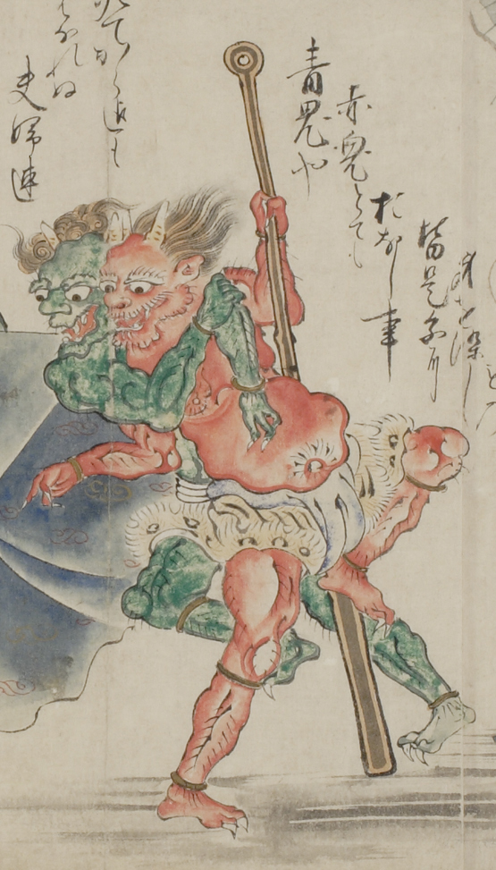

青鬼と赤鬼。それぞれ2本の角が生えており、白い太い眉と大きな口をしている。赤鬼は直毛、青鬼は巻き髪である。青鬼は赤く大きな腹をした赤鬼に絡みつき、赤鬼は長い棍棒のようなものを握り締めている。また互いに虎皮の褌を身につけている。
出典：親書誌：U426_nichibunken_0058：地獄草紙絵巻；ジゴクゾウシエマキ／日付：2006／資源識別子：U426_nichibunken_0058_0002_0001
Copyright (c)2010- International Research Center for Japanese Studies, Kyoto, Japan. All rights reserved.